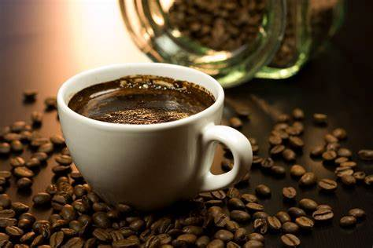

Begin by brewing your coffee grounds in a coffee maker or French press using the filtered water. Allow it to brew to your desired strength.
As the coffee brews, channel your inner superhero and envision the powers you wish to imbue into your brew. This step is crucial for activating the magical potential of the coffee.
Once the coffee is brewed, transfer it to a large cauldron (or any other suitable vessel for concocting magical brews).
Stir in the pinch of stardust and powdered lightning bolts. These ingredients are optional but are said to enhance the magical properties of the brew.
Add the cocoa powder and ground cinnamon to the cauldron. These ingredients not only add flavor but also contribute to the mystical energy of the brew.
With a wooden spoon (preferably carved from the branches of an ancient tree), stir the concoction clockwise three times, then counterclockwise three times, and finally, give it a vigorous whirl in a figure-eight motion to ensure all the ingredients are thoroughly mixed.
As you stir, recite an incantation of your choice, calling upon the forces of the universe to infuse the brew with superpowers. Be creative and let your imagination soar!
Once the brew is sufficiently stirred and charged with mystical energy, pour it into your favorite mug or chalice, taking care not to spill any of its potent contents.
Allow the brew to cool slightly before taking your first sip. As you drink, envision yourself gaining the superpowers you desire, whether it's super strength, lightning speed, or the ability to fly.
Enjoy your Superpower Brew and embrace the extraordinary abilities it bestows upon you. But remember, with great power comes great responsibility!
Coffee is a beverage prepared from roasted coffee beans. Darkly colored, bitter, and slightly acidic, coffee has a stimulating effect on humans, primarily due to its caffeine content. It has the highest sales in the world market for hot drinks. Vinze and Baboy's Coffee will surely create beautiful sparks in your stomach. However, we still recommend to buy only one coffee per day to avoid acid reflux and other related conditions. Drink responsibly.

Though coffee is now a global commodity, it has a long history tied closely to food traditions around the Red Sea. The earliest credible evidence of coffee drinking in the form of the modern beverage appears in modern-day Yemen from the mid-15th century in Sufi shrines, where coffee seeds were first roasted and brewed in a manner similar to current methods. The Yemenis procured the coffee beans from the Ethiopian Highlands via coastal Somali intermediaries and began cultivation. By the 16th century, the drink had reached the rest of the Middle East and North Africa, later spreading to Europe. In the 20th century, coffee became a global commodity, creating different coffee cultures around the world.
 Go to Bottom ->
Go to Bottom ->